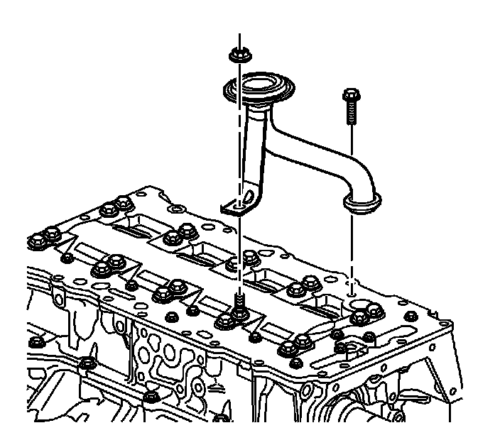
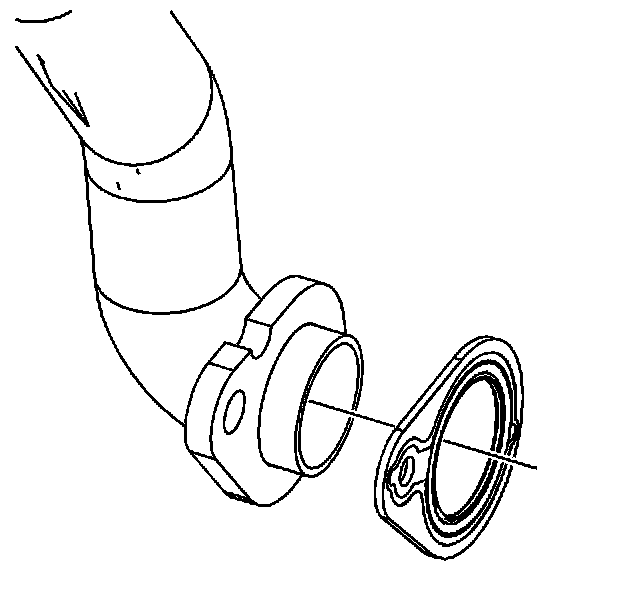

Oil Pick Up/Strainer: Service and Repair
Oil Pump Suction Pipe and Screen Assembly Replacement
Removal Procedure
1. Remove the engine oil pan. Refer to Oil Pan Replacement (Service and Repair) .

2. Remove the oil pump pipe support bracket nut.
3. Remove the oil pump pipe bolt.
4. Remove the oil pump pipe and screen assembly.

5. Remove and discard the oil pump pipe gasket.
Installation Procedure
1. Install a NEW oil pump pipe gasket on the oil pump pipe.
2. Install the oil pump pipe and screen assembly.
Notice: Refer to Fastener Notice (Fastener Notice) .
3. Install the oil pump pipe and screen assembly retaining bolt and nut.
* Tighten the oil pump pick-up tube nut to 24 N.m (18 lb ft).
* Tighten the oil pump pick-up tube bolt to 10 N.m (89 lb in).
4. Install the oil pan. Refer to Oil Pan Replacement (Service and Repair) .